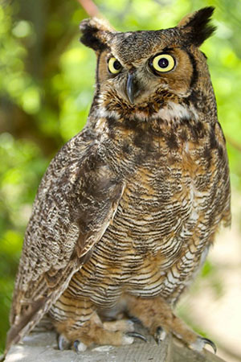

Birds of Prey
Great Horned Owl

This is a great horned owl. They can grow up to 2 feet tall with a wingspan often approaching 80 inches (200cm). It usually eats small rodents and birds but has been known to carry off larger prey.
Bald Eagle

This is a bald eagle. The adult male is about 90 cm (36 inches) long and has a wingspan of 2 metres (6.6 feet). Females, which grow somewhat larger than males, may reach 108 cm. (43 inches) in length and have a wingspan of 2.5 metres (8 feet). Both sexes are dark brown, with a white head and tail. The primary food of bald eagles is fish and a variety of other animals and birds like waterfowl. They'll also eat small mammals like squirrels, prairie dogs, raccoons and rabbits.
Red Tailed Hawk

This is a red tailed hawk which can weigh up to 3.5 lbs, and measuring up to 26 inches in length. It's wingspan can range from 3ft 7 in. to 4ft 8 in. In the wild you will find them all over America. The female tend to be larger than the male. Their favorite prey are voles and rats, but they will also eat rabbits, ground squirrels, and many birds, up to the size of a pheasant.
Barn owl